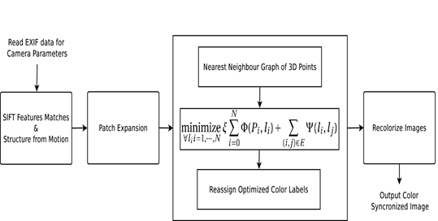

Multiview Color consistency
ABSTRACT
In this paper we address the problem of multiview color consistency. We propose to use a graph model of 3d positions obtained using matched dense feature points. We define an energy functional on this model which captures relationship of the colors across views while also imposing a smoothness cost to obtain optimal colors for the 3d positions. We finally recolorize the images using these optimal colors at reprojected co-ordinates. An important feature of the proposed method is that it does not use a reference view. Finally we present a qualitative evaluation of our method with methods that use a reference view.

PUBLICATION
Manohar Kuse, Sunil Prasad Jaiswal "Graph Modelling of 3D Geometric Information for Color Consistency of Multiview Images," in Proc. of International Conference on Image Processing (ICIP), 2015 in Quebec City, Canada. [paper],[Source Code]
REFRENCES
[1]Sameer Agarwal, Noah Snavely, Ian Simon, Steven M. Seitz, and Richard Szeliski, “Building Rome in a day.,” in ICCV. 2009, pp. 72–79, IEEE [2] Wei Xu and Jane Mulligan, “Performance evaluation of color correction approaches for automatic multi-view image and video stitching,” in Computer Vision and Pattern Recognition (CVPR), 2010 IEEE Conference on. IEEE, 2010, pp. 263–270. [3] Yu-Wing Tai, Jiaya Jia, and Chi-Keung Tang, “Local Color Transfer via Probabilistic Segmentation by Expectation-Maximization.,” in CVPR (1). 2005, pp. 747–754, IEEE Computer Society. [4] Erik Reinhard, Michael Ashikhmin, Bruce Gooch, and Peter Shirley, “Color Transfer between Images.,” IEEE Computer Graphics and Applications, vol. 21, no. 5, pp. 34–41, 2001. [5] Pierre Moulon, Bruno Duisit, Pascal Monasse, et al., “Global Multiple-View Color Consistency,” in Proceedings of Conference on Visual Media Production, 2013. [6] Anat Levin, Dani Lischinski, and YairWeiss, “Colorization using optimization.,” ACM Trans. Graph., vol. 23, no. 3, pp. 689–694, 2004. [7] D. Lowe, “Distinctive image features from scaleinvariant keypoints,” in International Journal of Computer Vision, 2003, vol. 20. [8]Noah Snavely, Steven M. Seitz, and Richard Szeliski, “Photo tourism: exploring photo collections in 3D.,” ACM Trans. Graph., vol. 25, no. 3, pp. 835–846, 2006. [9]Noah Snavely, Steven M. Seitz, and Richard Szeliski, “Modeling the World from Internet Photo Collections.,” International Journal of Computer Vision, vol. 80, no. 2, pp. 189–210, 2008 [10] Manolis Lourakis and Antonis Argyros, “The de- sign and implementation of a generic sparse bundle adjustment software package based on the levenberg- marquardt algorithm,” Tech. Rep., Technical Report 340, Institute of Computer Science-FORTH, Heraklion, Crete, Greece, 2004 [11] Yasutaka Furukawa and Jean Ponce, “Accurate, Dense, and Robust Multi-View Stereopsis.,” in CVPR.2007, IEEE Computer Society [12] Sunil Arya, David M. Mount, Nathan S. Netanyahu, Ruth Silverman, and Angela Y. Wu, “An Optimal Al- gorithm for Approximate Nearest Neighbor Searching Fixed Dimensions.,”J. ACM, vol. 45, no. 6, pp. 891–923, 1998 [13] Yuri Boykov, Olga Veksler, and Ramin Zabih, “Fast ap- proximate energy minimization via graph cuts,” Pattern Analysis and Machine Intelligence, IEEE Transactions on, vol. 23, no. 11, pp. 1222–1239, 2001 [14] Igor Gridchyn and Vladimir Kolmogorov, “Potts model, parametric maxflow and k-submodular functions,” in Computer Vision (ICCV), 2013 IEEE International Con- ference on. IEEE, 2013, pp. 2320–2327.